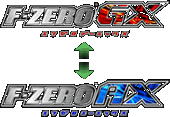
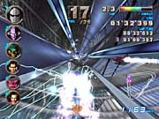
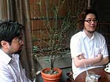

|
N.O.M もともと『F-ZERO』のコンセプトというのは、どういったものなんでしょうか。 |
|
今村 僕はずっとシリーズを担当しているんですが、ユーザーさんが求めているのはズバリ"スピード感"という、すごく分かりやすいテーマだと思うんですよ。プラス、ユニークな世界観ですね。なので、セガさんにはその辺さえきっちり押さえてもらえれば、あとは煮て喰おうが焼いて喰おうがどうぞということで(笑)。でもそういったことはこちらが言わなくても、「そんなことは分かってます」って感じだったんですよね。
阪本 "2000km/h"って言ってますけど、やっぱりユーザーさんにはその世界を味わってほしいなというのがありますから。 |
| |
|
N.O.M 最新作にあたって、いちばんのアピールポイントはどこでしょう。 |
|
阪本 ゲームモードが非常に充実しているんですが、やはり『F-ZERO GX』と『F-ZERO AX』が連動して、どう面白くなっていくのかという部分がいちばんですね。メモリーカードをゲームセンターへ持って行けば、『AX』でも『GX』側のデフォルトマシンとカスタムマシンが使えるということ、『AX』をプレイする毎に『GX』で使えるチケットをゲットできたり、『AX』のデフォルトマシンが『GX』でも使えるようになる…というようなところです。インターネットにアクセスすれば、『GX』のマシンでもランキングに参加できます。 |
| |
|
N.O.M レースゲームでアーケードとコンシューマーの連動という点だけでも着眼点が斬新ですが、ほかにはどんなところを見てほしいですか？ |
|
阪本 やはりスピード感ですね。とにかく速さを追求するゲームなので、そこの風呂敷を大きく拡げていきました。「こうしたら速くなるんだ」とか「上手くなった」っていうことが、プレイしていくうちに分かっていってもらえるんじゃないかと思いますね。あとは画像の質の高さ、サウンドなんかも。音楽はすごく手が込んでいてカッコイイので、注目してほしいです。
今村 効果音もいちいち細かいですよ。ブースト音なんかも、マシンによって変えてありますから。
阪本 ゲーム全体がわりとSFっぽいんで、エンジン音がマシンによってちがうっていうのとかも自然に出てきたようなネタで。「こうしたいなー」というのは各スタッフそれぞれ持ってたんですよね。僕が「変えなきゃダメ」とか言わなくても、勝手に出てくるようなアイディアだったんです。だから、なんの抵抗もなくそうしましょうという話になりました。 |
| |
|
N.O.M モードをたくさん詰め込んだ理由、というのはどういったものなんでしょう。 |
|
阪本 うちのプロデューサーの趣味です…(笑)。
今村 レースゲームというスタイルが、いまだ変わらずというか、速さを競うという、シンプルな目的じゃないですか。そこへたくさんの要素を詰め込んで、ユーザーをいかに飽きさせないかということで、今回はカスタマイズや『AX』との連動要素を入れたんです。
阪本 『F-ZERO X』から、さらに色々追加して拡げているので、追求してもらえる時間は長くなってるはずなんです。やり込み要素が大きいですね。
今村 好きな人はやり込みますよ。いまだにスーパーファミコン版の『F-ZERO』をやってる人もいますからね。「８年ぶりに記録を塗り替えた」とか言って(笑)。
阪本 やっぱり５年後とかも遊んでいてもらいたいですからね。それだけの魅力がありますから。
今村 それは断言できますね。『F-ZERO』は売り上げだけで言ったら、マリオシリーズなどのビッグタイトルに比べたら太刀打ちできていないんですが、それでも「すごく好き」と言ってずっとやってくださるかたがいるんです。マニアックなお客さんがすごく多いんですよ。そういうかたにもアピールできるようになってますね。 |